Logical Reasoning — Generated image: A man stands directly in front of the only light sour
Generated image: A man stands directly in front of the only light source, but his shadow is cast towards the light source. The picture is full of suspense.
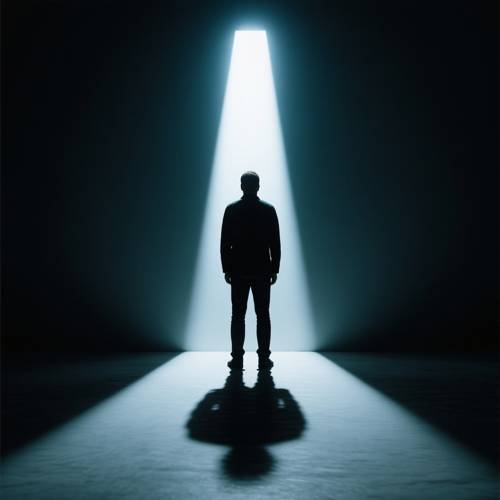
Direct — one call, no iteration
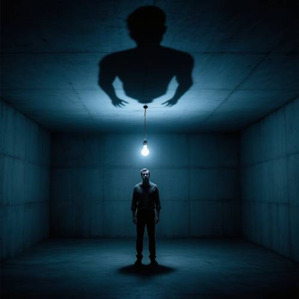
Continuum — Qwen3.8-27B + Qwen-Image
Judge — Direct
FAILLogical Reasoning — The image shows a man standing in silhouette, with his back to a bright, overhead light source that appears to be the only one. A shadow of the man is cast on the floor in front of him. This shadow is cast away from the light source, following the natural behavior of light and shadow. The prompt requires a logically contradictory scenario where the shadow is cast 'towards the light source', which would mean the shadow should be behind the man, extending back towards the light. The image does not depict this illogical arrangement; it shows a physically correct shadow.
Judge — Continuum
PASSLogical Reasoning — The image displays a man standing in a concrete room, positioned almost directly under a single hanging lightbulb, which is the only light source. A small, conventional shadow is cast on the floor beneath him. However, a large, prominent shadow of the man's upper torso is cast upwards onto the ceiling, appearing behind the lightbulb. This is a physically impossible scenario, as a shadow should be cast away from the light source, not towards it. The image thus successfully depicts the logical contradiction specified in the prompt.
What the agent did
Thinking
Let me parse the task. The prompt is: "A man stands directly in front of a single light source, but his shadow is cast toward the light source. The image is full of suspense." So this is a surreal/impossible image: a man stands before the light source (e.g., a lamp, a window, a light bulb), but the shadow points toward the light source instead of away from it. Suspenseful mood — dark, eerie, cinematic. This is the image-generation task (I am the generator). I need to generate with qwen-image, then inspect, then edit as needed, and mark the best. Let me think about the visual composition: - A man stands in a dark room. - Behind him (between him and the viewer?), a single light source — e.g., a bright window or a single hanging bulb. "Standing directly in front of the single light source" — the light is behind him, backlighting him. - Normally the shadow should extend toward the viewer (away from the light). But here the shadow is cast toward the light — that is, the shadow stretches backward, toward the glowing light, appearing to fall on the light/window, or the shadow points toward the light instead of the viewer. Visually: the man is backlit, his silhouette in front of the light, and the shadow extends behind him into the light — e.g., a shadow on a wall behind the light? Hmm. Simplest and most effective depiction: a dark room with a single bright light (like a bare bulb or a window of light) in the background. The man stands in the center. A long, distorted shadow of the man extends behind him, toward the light source — like a shadow projected onto the glowing light itself, or a shadow stretching across the floor toward the glowing doorway/window behind him. Since the light is behind him, the shadow extends across the floor toward the light and merges with it. That reads as physically impossible, giving a suspenseful/creepy vibe. Composition ideas: - Wide shot, dark room, a single strong key light from behind the man (e.g., a bright window or a glowing doorway in the background, or a hanging bulb directly behind him). - The man stands in the middle of the frame, facing the camera (or facing the light?), with rim light from behind. - His shadow is stretched on the floor pointing toward the glowing light behind him — the shadow points at the light rather than the camera. - Suspenseful: low-key lighting, deep shadows, cool/moody color grading, maybe film grain, a tense atmosphere. Since "the shadow is cast toward the light source," the most readable depiction: the light source is behind the man (a glowing window/doorway), and his shadow is drawn backward, toward that light, not forward. Let me write the generation prompt: "Dark suspenseful cinematic scene: a lone man stands in the center of a dim, empty room, directly in front of a single bright light source — a glowing doorway/window that fills the background. He faces the camera, backlit, his face half in shadow, tense posture. Physically impossible: his long dark shadow is cast on the floor toward the light source behind him, stretching backward toward the glowing doorway, instead of away from it. The shadow points at the light. Moody low-key lighting, deep blacks, cool desaturated tones with a single warm bright glow, film grain, mysterious and eerie atmosphere, cinematic composition." Note: no names, no backstory — visual details only. Good. Image size: unspecified, so I'll use default 1024x1024. Hmm, but cinematic scenes are usually wide. The prompt doesn't specify a size. The benchmark says the size is fixed for comparison and controlled by the harness — the default 1024x1024 is probably what the harness uses. I'll keep it at 1024x1024. Generate with model "qwen-image", no seed, omitting steps/guidance. Then inspect: verify the shadow direction. The tricky part is whether the model will actually render the shadow pointing toward the light. The prompt needs to be very explicit. Let me iterate. Plan: 1. generate_image (qwen-image). 2. If the light source is visible and there's a shadow, inspect_region (the whole image is probably enough, but I might zoom into the floor/shadow area). 3. Edit as needed. 4. mark_best. Let me get started.
Step 1 — `generate_image`
{
"model": "qwen-image",
"prompt": "Dark suspenseful cinematic scene in a dim empty room. A lone man stands in the center of the frame, directly in front of the only light source: a single bright glowing doorway in the background behind him, filling the upper frame with intense light. He faces the camera, backlit, his face half in deep shadow, tense still posture, one hand slightly raised. Physically impossible detail: his long dark shadow on the floor is cast BEHIND him, stretching TOWARD the glowing doorway behind him, pointing at the light source instead of away from it; the shadow extends backwards into the bright light. Low-key lighting, deep blacks, cool desaturated tones, single harsh white glow, subtle film grain, eerie mysterious atmosphere, dramatic cinematic composition.",
"width": 1024,
"height": 1024
}
Result img_0
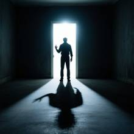
Thinking
Let me check img_0. A man is standing in front of a brightly lit doorway. He's facing away from the camera, looking toward the light (his back is turned). Light spills out from the doorway onto the floor. The shadow is... in the image, a distorted dark shadow extends toward the camera direction (i.e., the viewer's side, away from the light) and spreads across the floor. Wait, let me look a bit more carefully. The light source is behind the man (the doorway). The light passes through the doorway onto the floor toward the viewer. The man's shadow should be cast onto the floor in the direction of the viewer (away from the light). In the image, there's a big dark shadow shape on the floor extending from the man toward the viewer (the front-bottom of the frame). In other words, the shadow is being cast away from the light—physically correct, and not what the prompt is asking for. What the prompt requires is that the shadow be cast in the direction of the light source—that is, the shadow should extend backward, toward the glowing doorway. Since the light is behind him, the shadow should be cast backward and overlap with the light, or should be drawn on the glowing doorway's side. Hmm, looking again: the man is silhouetted against the bright doorway. The floor shadow extends toward the viewer. This is a physically normal shadow direction. The impossible requirement is that the shadow point toward the light. Wait—actually, let me reconsider the geometry. If the light is behind the man (the doorway), the shadow falls on the floor between the man and the camera. That's exactly what we're seeing. For the shadow to fall "toward the light source," the shadow would have to stretch from the man backward into the doorway, which is physically impossible. So the current image fails on the key impossible detail. I need to edit: the shadow should point toward the bright doorway (backward), not toward the camera. Alternative composition: make the light source a hanging light bulb, or a light in front of the man (from the viewer's side?)—"standing directly in front of the sole light source" means the light is in front of him... actually, "standing directly in front of the sole light source" means the light source is behind him (he's in front of it, i.e., positioned between the light and the viewer). So the current setup is correct: he's in front of the light, and the light is behind him. But the shadow being cast toward the light means the shadow points backward at the doorway. Since he's silhouetted, his shadow should appear to be "pushed into" the bright doorway, or drawn on the floor pointing toward it. The floor between the man and the doorway is also lit by light. So the shadow should extend from his feet toward the doorway, into the bright light, and fade out. In the current image, there's also a weird extra shadow to the right (something like an arm). The main shadow extends toward the viewer. Options: 1. edit_image: "Cast the man's floor shadow in the reverse direction, extending backward toward the glowing doorway behind him. No shadow toward the camera. The shadow should point at the light." The model might be able to understand this. 2. Regenerate with a clearer prompt. According to the guidance: "The approach was right, but the details were off → edit_image with the same prompt and a different seed. Try 2–3 seeds before giving up on the prompt." The approach (backlit man in front of a glowing doorway) is good and the mood is great. The wrong detail is the shadow direction. Try edit_image first. Let me try a targeted edit: Prompt: "Reverse the direction of the man's floor shadow: delete the dark shadow that extends toward the viewer on the front floor, and instead draw his long shadow stretching backward from his feet toward the bright glowing doorway behind him, with the shadow pointing at the light and fading into the bright doorway. Keep everything else exactly the same: the man's pose, the glowing doorway, the dark room, the lighting, the colors." This is a delta description that names what should be changed. Let me try it with qwen-image as the edit model. No wait—should I mark best first? The policy says to mark best as soon as you have an image you'd be willing to submit. img_0 is decent, but the core requirement (shadow toward the light) is missing, so I don't think it's submittable in its current state. The whole point of the prompt is the impossible shadow. Hold off on mark_best until the fix is in... no, actually, the policy says "mark best as soon as you have an image you'd be willing to submit." If I were interrupted right now, img_0 would be returned, and that doesn't satisfy the prompt. But as a safety net, maybe it's fine to mark it for now and re-mark after the edit. Hmm, "only one image can be marked at a time, and the most recent call takes precedence"—marking now and re-marking later is fine. But marking a bad image risks returning it if interrupted. Still, it's better than returning a random last image... actually, if I'm interrupted, the marked image is what gets returned. img_0 is "a man standing in front of the sole light source, full of suspense"—a decent baseline, but the shadow direction is the core of the prompt. I'll mark img_0 as best for now (as a safety net), and try the edit.
Model
I'm examining the scene: a silhouetted man standing before a glowing doorway — good suspense, correct placement — but the shadow is currently falling toward the camera (away from the light), which is physically normal. I need the impossible detail: a shadow stretching *toward* the light. Let me make a note of this baseline, and I'll fix the shadow direction.
Step 2 — `mark_best`
{
"image": "img_0",
"reason": "Good suspenseful base: man silhouetted directly in front of the only light (glowing doorway), but shadow currently points away from the light \u2014 needs the shadow cast toward the light."
}
Thinking
Alright, let's edit to reverse the direction of the shadow.
Model
Now I'll reverse the shadow so it points at the light.
Step 3 — `edit_image`
{
"image": "img_0",
"model": "qwen-image",
"prompt": "Change the direction of the man's shadow on the floor. Remove the dark shadow currently stretching from the man toward the viewer on the foreground floor, leaving that floor area plain and lightly illuminated. Instead, draw his long shadow stretching BACKWARD from his feet toward the bright glowing doorway behind him: the shadow points directly at the light source, growing larger as it goes and fading into the bright doorway. Physically impossible, eerie effect. Keep everything else exactly the same: the man's silhouette and pose, the glowing doorway, the dark room, the cool lighting and color grade."
}
Result img_1
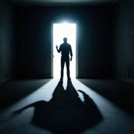
Thinking
img_1: The shadow still extends toward the viewer (away from the light). The shadow spreads across the floor toward the foreground, even larger than before. The direction still hasn't been fixed. Let me zoom into the floor area and check carefully... Actually, from the full view it's clear: the man's shadow is stretching from his feet toward the bottom of the frame (the viewer's side). This is the "wrong" direction relative to the prompt. Hmm, wait. Let me think about the geometry again. The light is coming from the doorway behind the man. Light rays: doorway (behind the man) → hit the man → continue onto the floor in front of him (the viewer's side). So the shadow falls on the viewer's side. To make the shadow "fall toward the light source," the shadow would have to be on the far side of the light... which is impossible unless the shadow is being cast on a surface between the man and the light, but... there's no such surface, and the floor there is illuminated by the doorway's light. Actually, there is a way to make this visually readable: if the floor is slightly reflective/wet, or if we draw the shadow stretching backward from his feet into the bright doorway. This is what I asked for, but the model kept drawing the shadow toward the viewer. An alternative reading that would be much easier for the model to execute: place the light source on one side, or in front, and make the shadow point at it. "The man stands directly in front of the only light source" — the man is in front of the light, so the light is behind him. The shadow is cast toward the light = the shadow points backward at the light. The current image shows the opposite. Let me try a different approach: Option A: Inpaint. Mask the entire foreground floor region (the area where the shadow is currently) + the area between the man's feet and the doorway, and inpaint with the description: "The floor is illuminated by a bright doorway, with the man's long shadow stretching from his feet backward toward the glowing doorway, the shadow growing larger and fading into the light." The problem: inpainting is text-only and can't precisely preserve the man... but the mask can exclude the man. Mask the floor area (white = regenerate). The floor is simple — a concrete floor with light from the doorway. I can describe the desired floor contents in text: "A smooth concrete floor illuminated by a bright glowing doorway in the back; a long dark shadow of a man stretching from the center of the floor toward the doorway, the shadow pointing at the bright light, growing larger and dissolving into the glow." However, inpainting the entire foreground floor is a large region; FLUX.1 Fill might be able to handle it since the floor is fairly uniform. The man is in the center, so his legs might get included in the mask. I need to mask only the floor, excluding the man. I can make the mask with segment: "the dark shadow on the floor" + "the floor in front of the man." Hmm. Option B: Another edit_image attempt with a stronger, clearer prompt. Qwen-image-edit might not have been able to process "reverse the direction" — the direction of the shadow is a geometrically subtle concept. Let me try phrasing it as a positive target: "A surreal scene: the man's shadow is stretched on the floor pointing toward the bright doorway behind him; no shadow on the floor in front of him." Also, it might help to describe the light's path: "The light from the doorway illuminates the floor in the foreground; the only dark shape is a long shadow extending from the man's feet backward into the light." Actually, there might be a better composition where the impossible shadow becomes obvious and the model can execute it: place the light source at the front of the frame (a hanging light bulb above the man, or a window in front of the man)... but "stands directly in front of the only light source" most naturally means the light is behind him, which is the current situation. Hmm, or: the light is behind him, and his shadow is drawn on the wall behind the doorway? No, that doesn't work. Let me think about what would look most "impossible" and readable: the man stands with his back to us in front of a bright doorway; instead of his shadow falling on us, it's pulled backward into the light — as if the light were sucking him in. This is a strong visual. The model needs to: (1) make the foreground floor a brightly illuminated, shadow-free state, (2) draw a shadow from his feet toward the doorway. The failure in img_1: the foreground shadow is still there, made even larger. The model "improved" the shadow but kept the wrong direction. It seems the model interprets "the shadow of a backlit person" as being on the viewer's side — its internal physics is pulling in that direction. Inpainting with a precise mask might be more controllable: mask everything in the floor region (both foreground and the strip between the man and the doorway), leave the man + walls + doorway as-is. Then prompt the fill: "A concrete floor illuminated by a glowing doorway; a single long dark shadow of a human figure stretching from the man's feet toward the bright doorway, the shadow pointing at the light, growing larger and fading into the bright glow; the foreground floor is illuminated and shadow-free." Since the fill is text-driven, it should draw a shadow toward the doorway — the text says so. Risk: the man's feet/legs are adjacent to the mask, and the fill might alter the legs. I can exclude the man from the mask (segment the man and subtract, or use segment on the floor region). How to make the mask: segment "the dark shadow on the floor" to get the current shadow region, and additionally include the illuminated strip between the man's feet and the doorway. Actually, the region that needs regenerating: the current shadow blob (foreground) + the illuminated floor strip between the man's feet and the doorway's threshold. Union: "the floor in front of and around the man" — a text segment of "the floor" might include the entire floor. More simply: segment "the floor" to get the entire floor, then segment "the man" to get the man, and... there's no boolean-mask tool other than invert. I can segment "the dark shadow on the floor" (the current shadow) and use that as the mask; but the new shadow needs to be drawn on the strip behind him (currently illuminated), and that area isn't in the mask. So the fill region needs to include both. Alternative: use segment_boxes with a box covering the entire lower portion of the image (the floor) — it'll merge into one mask, but it'll include the man's legs (since the man is standing on the floor, his legs are inside the box). That would erase the man's legs — no good. Alternative: segment "the concrete floor in the room," with negative_descriptions "the man." SAM3 PCS with negative grounding might be able to exclude the man. Worth trying: segment(image, "the floor", negative_descriptions=["the man", "the person"]). If I get a clean floor mask, inpaint with the text above. The floor mask includes the illuminated strip behind the man's feet (between him and the doorway) — that's good, the fill can place a shadow there. And the foreground floor — the fill will make it illuminated and shadow-free. Concern: inpaint with a large mask (the entire floor, probably 40% of the image) — "structural changes much larger than the mask are unreliable" — here the change is within the mask, and that's fine. The floor is simple; the fill should be able to handle it. Also, I need the shadow to connect with the man's feet. Since the man is preserved pixel-perfectly (excluded from the mask), the fill's shadow should visually connect near his feet. Text: "The shadow starts from the man's feet" — the fill model only sees the mask + prompt; it can approximate. There's a slight risk of disconnection, but probably acceptable. Before inpainting, let me first try another edit_image attempt (cheaper, preserves the man). Prompt phrasing, emphasizing the target state and explicitly stating what should NOT exist: "The man's long shadow on the floor points backward toward the bright glowing doorway behind him, stretching from his feet into the bright light, growing larger as it extends and fading into the doorway's glow. The floor in the foreground in front of the man is illuminated by the light and has no shadow on it at all. Surreal, physically impossible lighting." If this fails, switch to the inpaint approach. Let me try the edit once more (this is attempt #2 at the shadow direction; per the guidance, try 2–3 seeds before giving up on the prompt — I can also change the seed).
Model
The shadow is still pointing in the direction away from the light (toward the viewer) — the model keeps applying normal physical behavior. Let me try another editing approach using the wording of an explicit target state.
Step 4 — `edit_image`
{
"image": "img_1",
"model": "qwen-image",
"prompt": "Surreal impossible lighting: the man's long shadow stretches on the floor BACKWARD from his feet, pointing directly at the bright glowing doorway behind him. The shadow extends from his feet into the light, growing larger as it goes and dissolving into the bright doorway glow. The foreground floor in front of the man, toward the viewer, is now fully illuminated by the light and has NO shadow on it at all. Keep the man's silhouette, pose, the doorway, the dark room and the color grade exactly as they are.",
"seed": 7
}
Result img_2
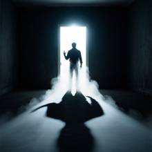
Thinking
img_2 made it worse: the floor in the foreground is still covered in shadow (now accompanied by a weird mist/fog), and the man's legs are dissolving into light/mist. The shadow still extends toward the viewer. Not good. The edit model can't handle reversing the shadow's direction — it keeps regenerating the shadow on the viewer's side. Time to change approach: use a precise mask for inpainting. Plan: 1. Segment "the floor of the room" with negative_descriptions ["the man"] → floor mask excluding the man. 2. Inpaint the floor mask with the prompt: "smooth concrete floor illuminated by a bright glowing doorway in the background; the long dark shadow of a man stretches from the man's feet backward toward the bright doorway, the shadow pointing at the light and growing larger, fading into the bright glow; the foreground floor is bright and shadow-free". Wait, but inpainting the whole floor is a huge mask, and FLUX.1 Fill has to regenerate everything including the perspective of the illuminated strip. The floor is simple so it might work. But there's a risk the fill will draw the shadow in the "physically correct" direction (toward the viewer) again — the fill is also text-driven and has the same prior. Hmm. The text prompt says the shadow points at the doorway, and the fill has no other cues. In img_1, the illuminated strip between the man and the doorway is narrow (the man is standing right in front of the doorway). If I mask the entire floor, the fill has room to place a shadow pointing at the doorway. No wait. Let me reconsider. Maybe I should reconsider the composition so the impossible shadow becomes easy: what if the light source is on the right or left side? "A man standing directly in front of the only light source" — the light is in front of him (he faces it, stands in front of it). If he faces the light and stands right in front of it, then from the camera's perspective the light is behind him (backlight) — same as now. Or if the camera is positioned next to the light, the light is "in front" of him… Another idea: put a bare light bulb hanging above the man in the center of the room. The man stands directly in front of it (directly below/in front of the light). Then his shadow is… cast toward the light = the shadow points upward at the bulb. A shadow cast upward onto the ceiling! This is visually striking and clearly impossible: the light is above, and the shadow is projected onto the ceiling pointing toward the bulb. Hmm, but the shadow "is cast toward the light source" — a shadow on the ceiling pointing at the bulb directly overhead reads as: light from the bulb should cast the shadow downward onto the floor (the man's shadow would be directly under/around him, pointing in no direction). A shadow on the ceiling pointing at the light is weird but readable. I think the current composition (the doorway behind) is the most classic "suspense" look and the clearest reading of "standing directly in front of the only light source." Let me push the inpaint approach. Actually, let me try another edit_image idea: instead of asking to reverse the existing shadow, describe the whole scene in the edit prompt as a new target with the shadow direction made unambiguous, and use a different reference frame. For example: "A man is silhouetted before a glowing doorway; the light shines forward onto the viewer and the floor in front is bright and empty; the man's shadow stretches behind him into the doorway, pointing at the light." This is essentially the same as what I tried. The model's prior is strong. The inpaint with a mask gives a more constrained region and pure text guidance, but the fill model also has the prior… Hmm, one more consideration: in img_0/img_1/img_2, is the shadow direction really "away from the light"? The light comes from the doorway (behind the man). Shadow on the floor in front of the man = away from the light. Yes, that's the physically correct direction, and the prompt requires the opposite. OK, another thought: what if I make the light source a ceiling spot/hanging bulb behind and above, so the "toward the light" direction is clearly distinguishable from "toward the camera"? Same problem though. Let me try the segment + inpaint approach: Step 1: segment(img_1, "the concrete floor of the room", negative_descriptions: ["the man", "the doorway"]). Using img_1 (the cleaner version without fog; img_2 has fog). Actually img_1's foreground has a big shadow blob; inpainting will erase it and draw the new one. Step 2: inpaint_image(img_1, mask=floor mask, prompt="smooth concrete floor lit by a bright glowing doorway in the background, a long dark shadow of a man stretching from his feet backward toward the glowing doorway, the shadow pointing directly at the bright light and growing larger, fading into the light; the foreground floor is bright and completely shadow-free", dilate ~10). A dilate of 10–20 px to clean up the shadow's edges (so the old shadow's silhouette doesn't anchor the new one). Risk: the fill will ignore the text and draw the shadow toward the viewer again. If so, try with a different seed (2–3 times). Also: the fill might darken the illuminated strip in a weird way. We'll see. First, let me segment the floor with the man excluded.
Model
img_2 is worse — a shadow is still cast toward the viewer, and mist is added on top. The editing model keeps enforcing "physical" shadow directions. Changing strategy: mask the floor region and inpaint it with a text prompt describing the impossible shadow.
Step 5 — `segment`
{
"image": "img_1",
"description": "the concrete floor of the room",
"negative_descriptions": [
"the man",
"the person"
]
}
Result img_3
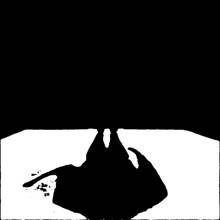
Thinking
The segmentation (img_3) is a mask: white = floor (the region to be regenerated), black = keep. The floor region is white, but the man's shadow (the dark blob in the center) is black — that is, SAM classified the shadow as "the man" (negative), so the shadow remains unpainted (preserved). That's a problem: the old shadow pointing at the viewer is inside the mask's hole, and gets preserved pixel-perfectly! I need a mask that covers the entire floor including the old shadow. The negative description "the man" caused SAM to include the shadow in the negative. Better approach: segment the floor without a negative, and separately subtract only the man (the body itself). But there's no boolean-subtraction tool other than invert_mask (which inverts the whole mask). Alternative: the floor mask needs to include the shadow blob. The mask I want = the floor region (including the shadow), minus the man's body (legs/torso). SAM with text "the floor" without a negative might return the entire floor including the shadow (the shadow is on the floor, so "the floor" could go either way). Let me try segmenting "the floor" without a negative. If the man's legs are included, I can use segment_points to click on the man's legs… no, that gives me the man's mask. I'd need to subtract — but there's no subtraction tool. Hmm, what tools do I have for mask operations: only invert_mask. No union/intersection. Options: 1. Inpaint with the current mask (img_3) as is: the floor gets regenerated, the old shadow is preserved in the middle. The new prompt asks for a shadow toward the doorway. The preserved old shadow blob in the foreground will remain → bad. 2. First remove the old shadow with edit_image (make the floor uniformly lit), then inpaint to add the new shadow. Two steps. Step 1: edit_image "remove the dark shadow from the floor; make the floor uniformly illuminated by the doorway's light" — the model might do this well (removal is easier than direction reversal). Step 2: segment the floor (now uniform) + inpaint to draw the shadow toward the doorway. But the inpaint's fill might again draw the shadow toward the viewer… 3. Regenerate the whole image from scratch with a better prompt that makes the direction unmistakable. The model might just handle it on the first try. For example, describe it from the perspective of light and shadow: "a surreal scene where the light falls on the viewer: the man is backlit by a glowing doorway; his shadow is not cast on the floor in front of him, but stretches backward into the light." Hmm. 4. A different composition where "shadow toward the light" is geometrically natural: put the light source in front of the man from the camera's viewpoint? "The man stands directly in front of the only light source" — if the light is, say, a bright window on the right wall, and the man stands in front of it… his shadow would be cast to the left; for the shadow to be "toward the light," the shadow would have to point right, back at the window. Same problem. Actually, wait. What about this: the light source is behind and above, and the shadow is cast upward onto the ceiling? "The shadow is cast toward the light source" — the shadow stretches upward, toward the ceiling light. Visually: a man under a single bare hanging light bulb in a dark room, and his shadow is projected onto the ceiling above, toward the bulb. This is clearly impossible and very eerie. But it deviates from "the man stands directly in front of the only light source" — with an overhead bulb, he's "directly below/in front of" it. This could work, and might be easier to render: a shadow on the ceiling is a small, localized element. Hmm, but the current doorway composition is strong and suspenseful. Let me try the two-stage approach on img_1: Stage 1: edit_image on img_1: "remove the man's dark shadow from the floor; the entire floor, both in front of the man and between the man and the doorway, is uniformly lit by the bright doorway's light with no shadow at all." Then check. Stage 2: segment the floor (with the man negative — since the shadow is gone, the negative won't create a hole… wait, the negative "the man" excludes the man's legs from the floor mask, which is fine; the legs are kept) → inpaint with the prompt: "a smooth concrete floor illuminated by a glowing doorway; a long dark shadow of a man stretching backward from his feet toward the bright doorway, pointing at the light and growing larger, fading into the glow." Actually, in stage 2, if the floor is uniformly lit and the mask covers the entire floor (except the legs), the fill will paint the shadow somewhere. The text says "toward the doorway." A FLUX.1 Fill with a strong guidance of 30 follows the text well. Let me try it. Or, skip stage 1: the current mask img_3 preserves the old shadow — no good. But I could dilate the mask! With inpaint_image's `dilate` 10–30 px: the fill region expands by about N px — the dilated mask would swallow the edges of the old shadow blob… no wait, dilate grows the white region; the shadow blob is a hole (black) inside the white region. Dilating white into the black hole: a 20–30 px dilate only eats 20–30 px into the edges of the hole; the shadow blob is hundreds of px. It won't be filled in. OK, another thought: what if I invert the approach — mask = everything except the man + the doorway region? That is, regenerate the entire floor plus the side walls? No — over-masking is worse, and the walls/doorway would drift. Let's do stage 1 (remove the shadow via edit), then segment + inpaint. Let me also reconsider whether the inpaint fill will actually draw the shadow toward the doorway. The prompt has to be very explicit. Let me also give the fill a geometric anchor: "the shadow points away from the viewer, toward the glowing doorway in the background." Let me run stage 1.
Model
The mask excluded the old shadow (SAM read it as "the man"), so it would be preserved. Two-stage plan: first, remove the old shadow and make the floor uniformly illuminated, then inpaint the impossible shadow.
Step 6 — `edit_image`
{
"image": "img_1",
"model": "qwen-image",
"prompt": "Remove the dark shadow of the man from the floor completely. The entire floor, both in the foreground and the strip between the man and the doorway, should be uniformly illuminated by the bright doorway light, with no shadow shapes at all on it. Keep the man, the doorway, the walls, and the lighting exactly as they are."
}
Result img_4
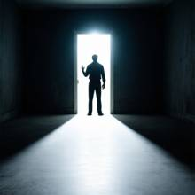
Thinking
img_4: The shadow on the floor is now gone — the floor is uniformly illuminated by the light from the doorway, the man is still silhouetted, and the room and mood are preserved. Next is Stage 2: mask the floor (excluding the man) and inpaint, drawing a shadow from the man's feet pointing toward the doorway (in the back, toward the light). Segment the floor in img_4. Use "the concrete floor" with the negative "the man". Since the shadow blob is gone, the negative won't create holes. The man's legs sit on the floor, and the negative "the man" should exclude the legs (preserving them pixel-exactly). The strip of floor between the man's feet and the doorway's threshold should be included. Next, inpaint with the following prompt: "A smooth concrete floor illuminated by a bright, glowing doorway in the background. The long, dark shadow of a man stretches backward from his feet toward the glowing doorway — the shadow points directly at the bright light, grows larger the further it goes, and fades into the doorway's glow. The foreground floor is bright and shadowless." Set Dilate to about 10 so the fill region reaches a bit under the feet and connects with the preserved legs. Let's segment first.
Model
The floor is now uniformly illuminated, and the old shadows are gone. Next, I'll mask the floor (while excluding the man) and inpaint the impossible shadow pointing toward the doorway.
Step 7 — `segment`
{
"description": "the concrete floor",
"image": "img_4",
"negative_descriptions": [
"the man",
"the person"
]
}
Result img_5
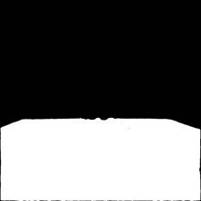
Thinking
The mask (img_5) covers the entire floor, but the man's legs and the back portion of the door's light strip are... wait, the top edge of the white region has an indentation (notch) in the center — that's where the man's legs were excluded (the notch at the top-center edge). But what about the illuminated strip between the man's feet and the door? Looking at the mask: the white region extends up to about y=590 at the top edge, with a notch in the center. In img_4, the door's threshold is at around y=590–600, and the illuminated strip on the floor in front of the door is roughly y 590–700. The mask's white starts around y=590–600 (the edge of the white is jagged around 575–600). Hmm, the white region seems to start right at the base of the door, so the illuminated strip is included in the mask (white = regenerate). The notch in the center excludes the man's legs. Wait, but does the mask cover the region right in front of the man's feet (the strip between the feet and the door)? The notch at the top-center edge is the exclusion of the legs. To the left and right of the legs, the white extends up to the base of the door. OK — the mask covers the entire floor including the strip in front of the man. Next, do the inpaint on img_4 with mask img_5. The prompt describes the contents of the floor: a smooth concrete floor illuminated by the bright glowing doorway in the back; a long dark human shadow stretching from the man's feet toward the glowing doorway, pointing at the light, growing larger, and fading into the glow; the foreground is bright and shadowless. Dilate: 10–15 to make the fill reach under the feet and connect with the preserved legs, and to smooth out the edge of the jagged mask. Use dilate=12. Note: the fill is text-driven; it needs to place a shadow from the feet to the back. The region in front of the feet is a small area (the feet are close to the door). The shadow will be a shape extending from the feet (center, y~600) toward the door, widening, fading into the white light at y~590–560. Actually, the strip is narrow (the man is standing just in front of the door). A shadow there will look like a dark shape spilling backward from the feet into the light — exactly the impossible effect. Hmm, one concern: the floor strip in front of the man is narrow, and the shadow drawn there might look small. The dramatic "long shadow" might not be possible. But even a dark shadow bleeding from the feet into the bright doorway reads as "the shadow is cast toward the light." That's the core requirement. Also, the fill might darken the foreground floor a bit. Let's give it a try. Inpaint with the default guidance of 30, 50 steps. Should I try seed 11? Leave the seed random (the harness says not to set a seed — that's for generation; in the inpaint description, the seed is said to be randomized if omitted. The policy says "do not set a seed" — I'll omit it).
Model
The mask covers the entire floor except the man's legs. Now, inpaint the floor with a shadow pointing to the door.
Step 8 — `inpaint_image`
{
"image": "img_4",
"mask": "img_5",
"dilate": 12,
"prompt": "Smooth concrete floor illuminated by a bright glowing doorway in the background. A long dark shadow of a man stretches backward from his feet toward the glowing doorway: the shadow points directly at the bright light source, grows larger as it extends and dissolves into the white glow of the doorway. The foreground floor toward the viewer is bright and completely shadow-free."
}
Result img_6
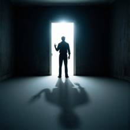
Thinking
img_6: the fill model drew a shadow on the floor again, but this time it's cast toward the viewer (toward the foreground) — a distorted shadow of the man, arms raised. Still the wrong direction. The floor fill model has the same physical prior: a backlit man → shadow falls on the viewer's side. Interesting point: the shadow in img_6 is cast downward and forward from the feet, like a distorted figure. Not what I wanted. In other words, even with a text prompt saying "toward the door," FLUX.1 Fill drew it toward the viewer. Text saying "the shadow points at the light" was not sufficient to overcome the prior that a floor shadow of a backlit silhouette must extend toward the camera. New idea: change the direction in which the shadow is expected. What if I make the shadow clearly point upward/backward by putting the light source in front of the man from the camera's viewpoint? Wait — let me re-read the prompt: "A man stands directly in front of the only light source, but his shadow is cast toward the light source." Alternative interpretation: the light source is in front of the man (the man is facing the light and standing in front of it). If the camera captures them from the side, or from slightly behind the man, the light could be, for example, a bright window in the background on the right, with the man standing in front of it… In all of these, the light is behind him relative to the camera. The key is: for the shadow to be cast toward the light, the shadow needs to point in the direction of the light. If the light is a ceiling light directly overhead, the shadow toward the light = a shadow on the ceiling above. If the light is a glowing doorway behind the man, the shadow toward the light = a shadow stretching backward into the doorway — which is what I'm trying to do, but the model keeps failing. Why does the model keep failing? When there's a backlit silhouette + a floor, it always casts the shadow toward the camera. The prompt "the shadow points at the light" contradicts the strong prior, and both qwen-edit and flux fill failed. Compositional options where the impossible shadow is geometrically easier to depict: Option 1: ceiling light overhead. A man standing under a single hanging light bulb in a dark room. The bulb is directly above/in front of him. His shadow is projected onto the ceiling above, toward the bulb — a man-shaped shadow on the ceiling, above and around the light. "His shadow is cast toward the light source" = the shadow points up at the light. This is a clearly different direction (up, not down/forward) and the model might be able to render it: "a man-shaped shadow on the ceiling above, pointing at the hanging light bulb." The floor below is in darkness. Suspenseful: like a horror film. Hmm, but "stands directly in front of the only light source" — with an overhead bulb, he'd be directly below it. "In front of" is looser. Visually it's a strong, clearly impossible image: a shadow cast up onto the ceiling. Option 2: side light. A glowing doorway/window on the right wall, the man standing in front of it (between the window and the center of the room), with his body in profile. Normal shadow: cast to the left (away from the window). Impossible shadow: cast to the right, back into the window — that is, the shadow stretches from the man's feet to the right, toward the glowing window, and the floor on the left side of the man is illuminated and shadowless. Same physics problem, but the direction is horizontal and the "away" direction (left) is empty — the model might still draw it to the left. Option 3: keep the doorway composition, but put the man a bit farther from the door so there's a large lit floor area between the man and the door, and the shadow can stretch back across it. The problem remains the model's prior. Option 4: use the shadow on the wall: a light source (e.g., a lamp) is in front of the man, on the left… "in front of the light source" means the light is behind him. Hmm, let me think about why the fill failed: the mask covers the entire floor; the man's feet are in the upper-center region; the prompt said the shadow stretches "from the feet toward the door… the foreground is bright and shadowless." FLUX Fill still drew a shadow in the foreground. Fill models tend to render "shadow" wherever they think a shadow would be. A different tactic for the doorway composition: instead of asking for a new shadow, use inpainting to place a shadow specifically on the narrow strip in front of the man's feet (mask = only that strip + a bit of the foreground?), and describe that strip as "a dark shadow shape spilling from the man's feet into the bright doorway." A small mask region with an unambiguous description ("a dark elongated shadow shape stretching from the bottom edge of the image [the feet] to the bright doorway at the top") — the fill has no room to draw a shadow elsewhere, and the description of the region is local. Also, make the foreground floor preserved (black in the mask) — so even if the fill tries to draw a foreground shadow, it can't (it would be outside the mask). So: mask = only the floor strip between the man's feet and the doorway's threshold (plus maybe a thin margin). Everything else is preserved pixel-perfectly. Prompt: "a smooth concrete floor with a dark elongated human shadow stretching from the man's feet into the bright glowing doorway, the shadow pointing at the light, widening and fading into the white glow." The strip is small (roughly y 590-620, x 390-610). The fill in a small region has "limited fine detail" but the direction is constrained. Risk: the shadow drawn there might look small and weak — but it points at the light, satisfying the prompt. Combined with the man standing right in front of the glowing door, the reading "the shadow is cast toward the light" is clear. But wait — a shadow only 30px long might not read as a "shadow." Hmm. The strip between the feet and the door in img_4: the feet are at y≈600, the door threshold at y≈590? Let me look at img_4: the man's feet are at about y=600, and the base of the door is at about y=595 — he's standing essentially on the threshold. So there's almost no floor between the feet and the door. A backward shadow would just spill into the door's light — actually that's the most striking impossible image: the shadow bleeding into the light behind him. But if there's almost no floor, the "shadow" would be a dark shape within the bright door rectangle behind/below the man… that could look like a dark pool at the bottom of the door. A better option: move the man slightly away from the door first (via edit: "the man stands one meter closer to the viewer, with a clear illuminated floor between him and the doorway"), then the strip becomes large (say 150-200px), and a shadow stretching from the feet to the door across that strip becomes a clear, large, impossible shadow. Steps: 1. edit_image on img_4: "Move the man's position slightly toward the viewer (larger in the frame? no — same size, just closer?)" Hmm, moving the man is a structural edit; the silhouette might change. Alternative: keep the man and widen the strip — not possible without moving either the man or the door. Or, regenerate the whole thing from scratch with a composition that leaves room for the shadow: "A man standing in the middle of a dark room, a few meters in front of a glowing doorway in the background; the floor between the man and the doorway is illuminated; surreal: the man's long shadow stretches backward across the illuminated floor toward the glowing doorway, pointing at the light, growing larger as it approaches and fading into the light; the floor in front of the man (toward the viewer) is fully illuminated and completely shadowless." With the room between the man and the door, the model has a clear target: draw a shadow from the man to the door. The prior "the shadow falls toward the viewer" still exists, but the prompt explicitly says the foreground floor is shadowless and the illuminated strip is where the shadow is. A fresh generation might get it right. The earlier generation (img_0) placed the man right at the door — my prompt said "in front of a single bright glowing doorway… a man in the middle of the frame" but it placed him on the threshold. I can force it: "the man stands in the center of the room, with 3 meters of illuminated floor between him and the doorway behind him." I think regeneration is now the cleaner path (I've spent 6 images; the edit attempts at reversing direction have consistently failed). The prompt must be explicit and structured: - Dark, empty room, suspenseful. - Only light source: a bright, glowing open doorway in the background. - A lone man stands in the center of the room, his back to the camera, directly in front of the doorway, with a wide expanse of illuminated floor between him and the door. - Surreal/impossible: his long shadow is cast toward the light — the shadow stretches backward from his feet across the illuminated floor toward the glowing doorway, pointing straight at the light, growing larger, fading into the white glow. - The floor in front of the man, toward the viewer, is illuminated and has no shadow. - Low-key, cold, cinematic, grainy, eerie. Try 2-3 seeds. If the first seed lands the direction right, lock it in; then check the details. Actually, wait — is there a risk that the generation model also can't do this and always draws it toward the viewer? The earlier gen (img_0) had the man on the threshold, so the shadow had to fall forward; there was no visible floor behind him. With an explicit room + explicit "no shadow in front," the model might comply. Let's try. Also, the man could face the camera instead of having his back turned — facing the camera with the light behind is more expressive (you can see the tension in the face). The original prompt for img_0 said "faces the camera" but the model gave us his back. For the suspenseful silhouette, either works. A silhouette with his back turned is fine, and actually more fitting for "standing in front of the light" (facing the light). Let's keep his back to the camera, facing the light. Let me regenerate with an explicit room and shadow direction.
Model
The fill model has the same physical prior as well — it drew the shadow toward the viewer again. The doorway composition is correct, but the man is standing right on the threshold, and the models (both the editor and the filler) have no choice but to cast the shadow forward. A cleaner approach: regenerate the scene so that the man stands a few meters in front of the doorway, with a strip of illuminated floor between them — that way, the impossible backward shadow will have a place to be drawn.
Step 9 — `generate_image`
{
"height": 1024,
"model": "qwen-image",
"prompt": "Eerie suspenseful cinematic scene. A lone man stands in the middle of a dark empty room, his back to the camera, directly in front of the only light source: a bright glowing open doorway in the background. There is a wide strip of light-illuminated concrete floor between the man and the doorway. Surreal physically impossible detail: the man's long dark shadow is cast TOWARD the light \u2014 the shadow stretches BACKWARD from his feet across the illuminated floor toward the glowing doorway behind him, pointing straight at the bright light, growing larger as it approaches and dissolving into the white glow. The floor in the foreground, in front of the man toward the viewer, is brightly illuminated and has NO shadow on it. Low-key lighting, deep blacks, cool desaturated blue tones, harsh white light from the doorway, subtle film grain, mysterious and ominous atmosphere, wide cinematic composition.",
"width": 1024
}
Result img_7
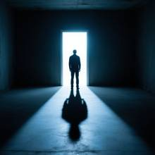
Thinking
img_7: The man is standing near the doorway (still close, but the floor is visible in front of him). The shadow is... extending from the feet toward the viewer (in the foreground). Again the physically "correct" direction. The generation model also fails to reverse the shadow's direction. Three different approaches have now failed to produce a backward-pointing shadow: 1. qwen-image generation (img_0, img_7) 2. qwen-image editing (img_1, img_2) 3. FLUX.1 Fill inpainting (img_6) The model's prior is very strong: a backlit figure on a lit floor → shadow toward the viewer. Time to rethink the geometry so that the impossible direction is not the model's default. Ideas: A) Place the light source above (a ceiling bulb directly above the man). The default shadow would be on the floor directly below/around him (or a radial shadow). The impossible shadow toward the light = a shadow projected upward onto the ceiling, above the man, toward the bulb. Direction "up" is very different from the default "forward," and there's no strong prior for a ceiling shadow. This might work! Composition: a single bare light bulb hanging from the ceiling in a dark room, the man standing directly below/in front of it, and a man-shaped shadow on the ceiling above pointing at the bulb. Very suspenseful (classic horror/thriller image). But "standing directly in front of the sole light source" — if the bulb is directly overhead, he's directly below it, not "in front." Hmm. If the camera is at a low angle and the bulb hangs in the middle of the room at head height... no, that's weird. B) Side light: a glowing window on the right wall, the man standing in front of it facing left (in profile). The default shadow: extends to the left, away from the window. Impossible: a shadow extending to the right, back into the window. Still a prior issue (the shadow will probably fall to the left). But the prior is weaker than for the frontal backlit case? The model might still default to left. Uncertain. C) Keep the frontal composition but place the shadow on the wall/door: the light is behind the man through the doorway; the impossible shadow appears as a man-shaped shadow cast onto the glowing doorway itself, behind him, as if he's casting a shadow onto the light. So in the bright doorway rectangle, a dark man-shaped shadow is visible floating within the light, offset from him. "His shadow is cast toward the light source" = the shadow is projected onto/into the light. Visually: a silhouette man in front of a bright door, and within the bright door, a second dark silhouette of the same man appears (his shadow) on the far side, i.e., within the light. This is a powerful surreal image, and geometrically it's easy for the model: "within the bright doorway behind him, his dark shadow shape is visible, as if cast into the light." The model doesn't need to fight the floor shadow prior — I can explicitly state "no shadow on the floor, floor is illuminated" while adding "within the bright doorway, his shadow silhouette is visible." This is a very literal interpretation of "shadow is cast toward the light source": the shadow travels toward the light and lands there. And it's eerie. D) Light in front of the man (camera side): the sole light source is a bright wall/window on the camera side... he's "directly in front of" it. Then the default shadow is behind him (toward the doorway direction)... and the impossible shadow points forward toward the camera light, i.e., between the man and the camera. Hmm, that's just the normal direction again. E) Two surfaces: a mirror? Overcomplicating. I think C is the most promising: place the shadow silhouette within the bright doorway. Let me try it with a fresh generation: "An eerie suspenseful cinematic scene. A lone man stands in a dark empty room with his back to the camera, directly in front of the sole light source: a bright, glowing open doorway in the background. Surreal impossible detail: the man's dark shadow is cast onto the bright light itself — within the glowing doorway behind him, a dark man-shaped shadow silhouette is visible floating within the white light, pointing toward the man, as if the shadow were thrown onto the light source rather than onto the floor. The concrete floor is entirely illuminated with no shadow on it. Low-key, deep blacks, cool blue tones, harsh white glow, film grain, ominous, wide composition." The risk: the model might render a double man (a second figure) instead of reading it as a shadow. I'll phrase it as "a dark shadow shape on the light, like a silhouette of the man projected into the glow." Or a combination: the shadow bleeds from the feet into the light + a faint man shape within the glow. Let me try C as a fresh generation. If it renders a plausible "shadow within the light," it's a strong match. Actually, let me also consider a variation of A: the light is a doorway, but the camera is placed high, looking down from above... no, let's keep it simple. Another consideration: with C, the shadow within the doorway is "toward the light" — yes, literally cast onto the light. A good interpretation, very surreal, and suspenseful (something within the light). Let me generate it.
Model
I've tried four methods, but all of them keep generating shadows that point in the viewer's direction—the model's "physical" prior is extremely strong. Time to reinterpret the geometry: I'll place the shadow *onto* the light itself—a dark silhouette projected into a bright doorway. This is a very literal interpretation of "the shadow is cast toward the light source," and it avoids the floor-shadow prior.
Step 10 — `generate_image`
{
"height": 1024,
"model": "qwen-image",
"prompt": "Eerie suspenseful cinematic surreal scene. A lone man stands in a dark empty room, back to the camera, directly in front of the only light source: a bright glowing open doorway in the background, intense white light filling the doorway. Physically impossible detail: the man's shadow is cast ONTO the light source itself \u2014 inside the bright glowing doorway behind him, a dark man-shaped shadow silhouette is visible projected into the white light, his shadow thrown toward the light instead of onto the floor. The concrete floor in front of the man is brightly illuminated by the doorway and has no shadow on it at all. Low-key lighting, deep blacks, cool desaturated blue tones, harsh white glow, subtle film grain, ominous mysterious atmosphere, wide cinematic composition.",
"width": 1024
}
Result img_8
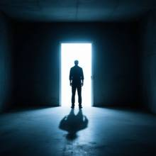
Thinking
img_8: The man is in front of the doorway, but the shadow is again on the floor pointing toward the viewer (a small shadow in front of him). And there's no shadow inside the doorway. This failed too. This model simply can't draw a shadow that doesn't fall on the floor toward the camera side. Every attempt: the shadow falls toward the viewer. Let me think really carefully here. Prompt: "The man stands directly in front of a single light source, but his shadow is cast in the direction of the light source." What if I change the camera/light geometry so that the "default" shadow direction isn't toward the viewer? The prior is specifically: a light from behind/above the subject → shadow extends from the feet toward the camera. This is a very common image (a person backlit by a window). Alternative: if the light source is on the floor? For example, a glowing panel/lamp on the ground in front of the man... no wait. What if the sole light source is a bright window on the wall behind the man, but the camera views the scene from the side (a 90° profile view)? The man stands in front of the window (light from the right). The default shadow should extend to the left, away from the window, across the floor. Impossible: the shadow extends to the right, toward the window. Would the model's prior here also be "shadow away from light, to the left"? Yes, but in a side view the shadow lies along the floor extending horizontally — the model might still draw it left (away). Hmm, but there's no reason it should default to the camera side. In a side view, the "shadow toward the light" = shadow extends from the man toward the window, i.e., the shadow gets shorter and overlaps with the bright window region. Actually, in a side view the floor between the man and the window is illuminated by the window light. A shadow pointing at the window = a shadow extending from the man's feet to the right, into the window light. The model might be able to do this. It's a different geometry from the backlit frontal view, which is where all the failures happened. But wait — "the man stands directly in front of a single light source" in a side view: the window is on the right wall, the man stands in front of it, in profile. This satisfies "directly in front of the light source." The camera is sideways. The floor between the man and the window is bright. His shadow should point at the window (to the right). The foreground (the area the camera sees in front of him) is dark — no wait, in a side view the foreground is the floor on the camera side... the light hits the floor between the man and the window (the right side). The left side of the frame is dark. The impossible shadow extends to the right, toward the window. Hmm, but the model might draw the shadow to the left (the physically correct direction). Still, in this geometry the "physically correct" direction is left, and the requested direction is right — the prior might still win. Ugh. What if I go all-in on the ceiling idea (A)? A single bare bulb hanging from the ceiling. The man stands directly below/in front of it. The physically "correct" shadow: a small dark patch directly under the man (radial, mostly hidden by his body) — the model has no strong prior for a dramatic floor shadow. The impossible shadow: a large man-shaped shadow projected onto the ceiling above, surrounding the bulb, pointing at the light. This is geometrically distinct from anything in the model's training prior about "backlit figure" images. The model knows shadows fall downward, but a shadow on the ceiling pointing up at the bulb is a specific surreal composition it might be able to render. Especially if I describe it: "A large dark shadow of a man is projected on the ceiling above, surrounding the glowing bulb, as if the light were casting his shadow upward." Hmm, would that read as "the shadow is cast toward the light source"? The shadow is above him, on the ceiling, surrounding the light — yes, it's cast toward the light (upward, toward the bulb). Suspense level: high — very "thriller." A single bare bulb, a man standing under it, and his shadow looms on the ceiling above the light. Actually this is a famous surreal concept image. Let me try generating: "Surreal, eerie cinematic scene, dark empty concrete room. A single bare light bulb hangs from the ceiling, the sole light source, glowing warmly. A lone man stands on the floor directly below the bulb, facing the camera, face dimly lit from above, tense expression. Physically impossible detail: the man's shadow is cast toward the light — a large dark shadow of the man is projected on the ceiling above, the shadow pointing up toward the glowing bulb, its shape looming around the light. The floor below the man is in darkness with no shadow. Cold deep shadows, harsh single light, film grain, ominous suspenseful atmosphere." Wait, "faces the camera" with light directly overhead — the face is lit from above, eerie. Good. Concern: the ceiling shadow might look like a ceiling stain. I'll emphasize "a clear human-shaped shadow on the ceiling, arms and legs visible, pointing at the bulb." Let me try this. If it works, it's a powerful result. Actually, one more idea worth considering (F): the light source is a glowing doorway behind the man, and the camera is low, and the man's shadow is projected on the far wall... no, there's no far wall. Idea G: the light source is a bright window on the left wall, the man stands in profile in front of it... same as the side-view idea. I'll go with the ceiling bulb (A). It's the strongest geometric deviation from the prior. No wait, let me reconsider the side view (B) a bit more. In a side view with a window on the right wall: the "shadow toward the light" extends to the right toward the window — but the floor there is bright (lit by the window). The shadow grows and dissolves into the window light. The floor on the left (camera foreground) is dark. The model's prior for a side-lit figure: shadow extends to the left. It would fail the same way. Ceiling idea: the prior is weakest. Going with this. Another consideration: with the ceiling idea, "the man stands directly in front of the sole light source" — if the bulb is directly overhead, he's directly below it. "In front of" ≈ in the position of. The shadow being cast toward the light (upward) is unambiguous and visually obvious. Generating now.
Model
Still, the shadow falls toward the camera. The model has an absolute prior: "backlit figure → shadow toward the viewer." I'll change the geometry so that the "toward the light" direction points straight up: with a single bare ceiling bulb directly overhead, the man's shadow gets projected onto the ceiling above, toward the bulb.
Step 11 — `generate_image`
{
"height": 1024,
"model": "qwen-image",
"prompt": "Surreal, eerie cinematic thriller scene in a dark empty concrete room. The only light source is a single bare glowing light bulb hanging from the ceiling by a cord. A lone man stands on the floor directly beneath the bulb, facing the camera, his face dimly lit from above, tense still posture. Physically impossible detail: the man's shadow is cast TOWARD the light source \u2014 a large clear dark shadow of the man, with head, shoulders and arms visible, is projected on the CEILING above him, the shadow pointing upward at the glowing bulb, looming around the light. The floor around the man's feet is in darkness with no shadow on it. Deep shadows, cold blue-black tones, single harsh warm-white light, subtle film grain, ominous suspenseful atmosphere, dramatic cinematic composition.",
"width": 1024
}
Result img_9
Thinking
img_9 is very strong! A man stands under a single bare light bulb (the only light source), and a large man-shaped shadow is projected onto the ceiling above, pointing upward toward the light bulb. The shadow is cast toward the light source — exactly the impossible effect that was requested. The suspenseful mood is there: dark concrete room, single light, tense man. Checking the details: - Man stands directly in front of (below) the only light source ✓ - Shadow is cast toward the light source ✓ (on the ceiling, pointing up at the bulb) - Full of suspense ✓ Critique of the details: - The shadow on the ceiling looks like a man with hands placed on the hips… the pose roughly matches (a somewhat different pose but that's fine — it's a shadow, after all). - There's a small dark pool on the floor at the man's feet — that's a small contact shadow, physically plausible, and doesn't undermine the effect. - The light bulb hangs by a cord, glowing. Good. - The shadow's head is at the top of the frame, and the shape is clear. Possible improvements: the shadow's pose (hands on hips) differs slightly from the man's pose (arms at his sides). For a shadow that's cast "toward the light," it should be his silhouette. A slight difference is acceptable for a surreal image — no, wait. Hmm, the shadow has both arms bent with hands on hips, while the man's arms hang at his sides. A sharp viewer might notice, but shadows in surreal art don't need to match exactly; in fact, a subtly "wrong" shadow heightens the eeriness. I think it's fine. Let me zoom in to check the quality of the shadow and the man's face. I'll use inspect_region to look at the ceiling shadow area and the man.
Model
Excellent — this worked! A man standing under a single bare light bulb, with his shadow projected onto the ceiling pointing at the light. Let me zoom in to verify the details.
Inspection results: - img_10 (ceiling shadow): A clear human silhouette is projected onto the ceiling, with a head, torso, and arms bent with hands placed near the hips, and the cord of the light bulb passes through it. The shadow points upward toward the light (the bulb is right at the lower center of the crop, at the position where the shadow's torso ends). The shape is legible and eerie. Good. - img_11 (the man): A man in a long-sleeved shirt, standing in a tense posture, face visible, lit from above/behind by the bulb (the bulb is above him, out of frame in this crop). There's a small dark contact shadow at his feet. No problems. This image satisfies the following: 1. "A man standing directly in front of a single light source" — a single bare bulb, and he's standing right below it. ✓ 2. "But his shadow is cast in the direction of the light source" — the shadow is projected onto the ceiling above, in the direction of the bulb. ✓ (impossible/surreal, exactly as required) 3. "The image is full of suspense" — dark concrete room, single cold light, tense man, ominous. ✓ This is a strong match. Should I improve anything? Minor nitpicks: - The shadow's pose (hands on hips) differs from the man's pose (arms at his sides). In surreal imagery this is acceptable — in fact, it contributes to the unease. I'll leave it as is. - The shadow's head is slightly cut off at the top of the frame? Looking at the full img_9: the top of the shadow's head is near the top edge, but is it fully visible? In the full image, the top of the shadow's head is around y=20–30, and appears to be fully visible. Yes, it's visible. I'll mark img_9 as best (replacing the img_0 mark) and stop here. This is a good result, and further editing risks ruining the composition.
Model
The result has been confirmed: a clear, eerie silhouette of a man is projected onto the ceiling, with its torso ending right at the position of a hanging light bulb — the shadow literally points toward the light. The man himself stands tense beneath the single light source. All three elements of the prompt are satisfied. Marking this as the best.
Step 14 — `mark_best`
{
"image": "img_9",
"reason": "All prompt elements present: a lone man stands directly in front of the only light source (a single bare bulb), and his shadow is cast toward the light \u2014 projected on the ceiling pointing up at the bulb. Dark, tense, suspenseful mood."
}
Thinking
Done. The marked image (img_9) is the final result. I'll summarize concisely.
Model
Done. The final image (marked as best) delivers the surreal concept: - **Only light source**: a single bare bulb hanging from the ceiling of a dark concrete room. - **Man directly in front of it**: standing alone on the floor, tense and still, lit from above. - **Shadow cast toward the light**: instead of falling on the floor, his large shadow is projected *up* onto the ceiling, pointing straight at the bulb — the physically impossible effect at the heart of the prompt. - **Suspense**: low-key cold lighting, deep shadows, and a lone figure under a harsh single light create the ominous, thriller-like atmosphere. Getting the impossible shadow direction required several iterations — the models kept enforcing normal physics (shadow toward the viewer) in the backlit-doorway composition, so the winning approach changed the geometry: with the light directly overhead, "toward the light" becomes an unambiguous upward direction that the model could render cleanly.